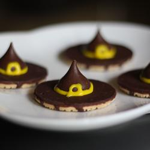

Are you ready for the start of the Holiday Season 2018! Let’s see how Witches' Hats cookies can be made for the Halloween Season 2018! :) You could do something similar for Christmas to show off your baking skills! :)
"A cute and simple little Halloween treat that everyone will love. The amount this recipe makes depends on how many cookies and chocolate kisses you have. It just depends on how many you want. The last time I made these, I ended up making about 140 or so.," says Sarah Smith.
Ingredients
Directions